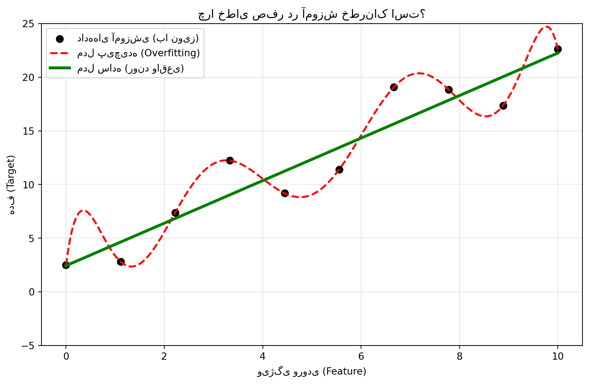
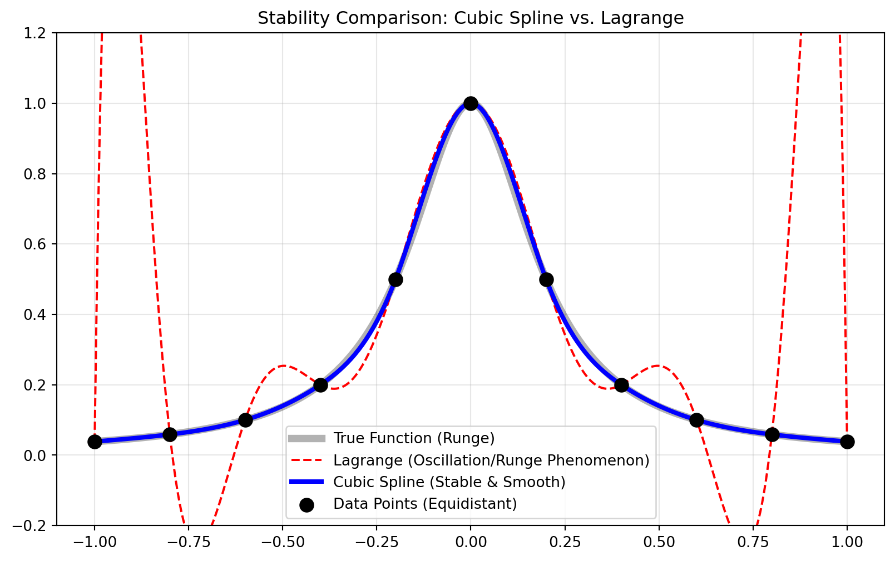
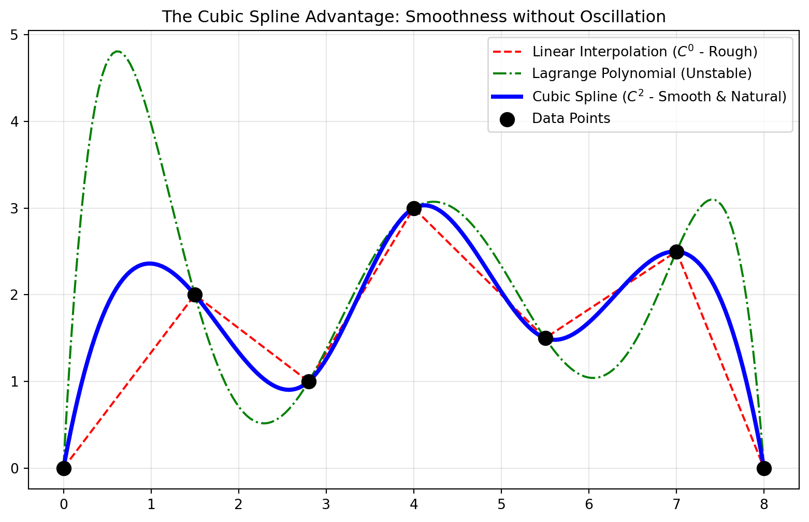
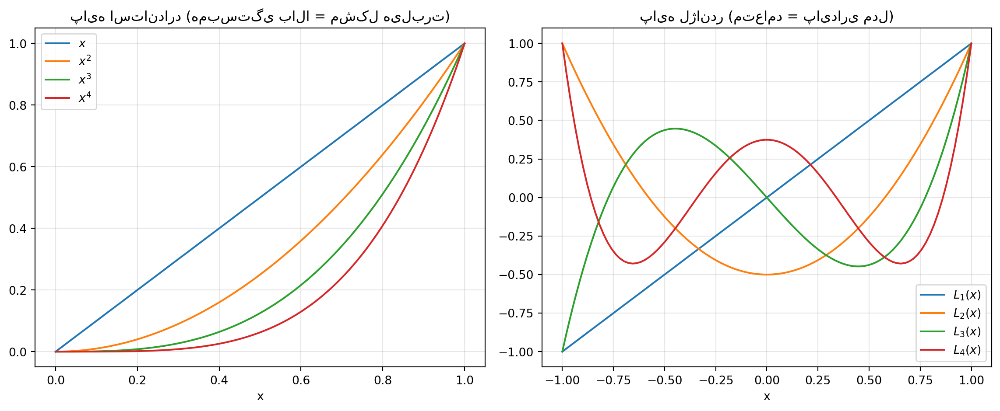

چگونه مفاهیم کلاسیک ریاضی، زیربنای یادگیری ماشین مدرن را میسازند؟
Data Science
Machine Learning
Numerical Analysis
Mathematics
Author
Yahya Izadi
Published
November 24, 2025
1 مقدمه: یادگیری ماشین همان نظریه تقریب است
شاید در نگاه اول، درس «محاسبات علمی» مجموعهای از فرمولهای خشک برای حل انتگرال یا یافتن ریشه توابع به نظر برسد. اما اگر عینک «علم داده» (Data Science) را به چشم بزنیم، متوجه میشویم که تقریباً تمام الگوریتمهای مدرن هوش مصنوعی، ریشه در یک سؤال بنیادین ریاضی دارند:
«چگونه میتوانیم یک تابع ناشناخته و پیچیده (دنیای واقعی) را با یک تابع ساده و محاسباتی (مدل) جایگزین کنیم، به طوری که خطا حداقل باشد؟»
در یادگیری ماشین، این «تابع پیچیده» میتواند الگوی تشخیص چهره یا پیشبینی قیمت مسکن باشد. در این مقاله، ما پل مستقیمی میان مباحث کلاسیک تقریب (درونیابی، اسپلاین، کمترین مربعات) و چالشهای روزمره یادگیری ماشین (Overfitting، انتخاب ویژگی، همخطی) میزنیم.
2 ۱. تلهی کمالگرایی: درونیابی لاگرانژ و بیشبرازش (Overfitting)
در درس محاسبات علمی یاد گرفتیم که اگر \(n\) نقطه داده داشته باشیم، همیشه میتوانیم یک چندجملهای از درجه \(n-1\) پیدا کنیم که دقیقاً از تمام این نقاط عبور کند. این همان درونیابی لاگرانژ است.
2.1 تحلیل چالش در علم داده
در نگاه اول، خطای صفر روی دادهها عالی به نظر میرسد. اما در علم داده، دادههای ما معمولاً دارای «نویز» (Noise) هستند. اگر مدل ما سعی کند دقیقاً از تمام نقاط عبور کند، در واقع نویز را به عنوان بخشی از الگو یاد میگیرد.
این پدیده در یادگیری ماشین Overfitting (بیشبرازش) نام دارد. مدلی که روی دادههای آموزشی (Training Data) خطای صفر دارد، اما به محض دیدن دادهی جدید، رفتاری غیرقابل پیشبینی و نوسانی نشان میدهد.
2.2 شبیهسازی و تحلیل نمودار
در کد زیر، ما یک رابطه خطی ساده (با نویز) را با دو روش مدل میکنیم: 1. چندجملهای درجه بالا (Overfitting): مشابه لاگرانژ، سعی میکند همه نقاط را بگیرد. 2. رگرسیون خطی (Underlying Trend): سعی میکند روند کلی را پیدا کند.
Code
import numpy as npimport matplotlib.pyplot as pltfrom sklearn.pipeline import make_pipelinefrom sklearn.preprocessing import PolynomialFeaturesfrom sklearn.linear_model import LinearRegression# تولید دادههای مصنوعی (روند خطی + نویز)np.random.seed(42)x = np.linspace(0, 10, 10)y =2* x +1+ np.random.normal(0, 3, size=len(x)) # y = 2x + 1 + noise# مدل پیچیده (درجه ۹ - معادل لاگرانژ روی ۱۰ نقطه)model_complex = make_pipeline(PolynomialFeatures(9), LinearRegression())model_complex.fit(x[:, np.newaxis], y)# مدل ساده (درجه ۱ - رگرسیون خطی)model_simple = make_pipeline(PolynomialFeatures(1), LinearRegression())model_simple.fit(x[:, np.newaxis], y)# نقاط برای رسم نمودارx_plot = np.linspace(0, 10, 200)plt.figure(figsize=(10, 6))plt.scatter(x, y, color='black', s=50, label='دادههای آموزشی (با نویز)')plt.plot(x_plot, model_complex.predict(x_plot[:, np.newaxis]), 'r--', linewidth=2, label='مدل پیچیده (Overfitting)')plt.plot(x_plot, model_simple.predict(x_plot[:, np.newaxis]), 'g-', linewidth=3, label='مدل ساده (روند واقعی)')plt.ylim(-5, 25)plt.title("چرا خطای صفر در آموزش خطرناک است؟")plt.xlabel("ویژگی ورودی (Feature)")plt.ylabel("هدف (Target)")plt.legend()plt.grid(True, alpha=0.3)plt.show()

Figure 1: تحلیل مقایسهای: تلاش برای صفر کردن خطا (قرمز) در مقابل کشف روند کلی (سبز)
تحلیل نمودار: همانطور که میبینید، منحنی قرمز (مدل پیچیده) بین نقاط نوسانات شدیدی دارد. اگر دادهای در نقطه وارد شود، مدل قرمز پیشبینی پرت و غلطی خواهد داشت، در حالی که خط سبز (مدل ساده) با وجود داشتن خطا روی دادههای آموزشی، تعمیمپذیری بهتری دارد.
3 ۲. پدیده رونگه و استراتژی جمعآوری داده (Active Learning)
یکی از مثالهای مشهور آنالیز عددی، تابع رونگه () است. این تابع نشان میدهد که حتی اگر تابع اصلی بسیار صاف باشد، انتخاب نقاط با فواصل مساوی (Equidistant) برای تقریب، باعث ایجاد نوسانات انفجاری در لبههای بازه میشود.
راه حل ریاضی، استفاده از نقاط چبیشف (Chebyshev Nodes) است که در لبههای بازه تراکم بیشتری دارند.
3.1 کاربرد در علم داده: Active Learning
این مفهوم ریاضی یک درس بزرگ برای جمعآوری داده دارد: همه دادهها ارزش یکسانی ندارند. در متدولوژی Active Learning (یادگیری فعال)، الگوریتم به جای دریافت دادههای تصادفی، درخواست میکند که دادههایی برچسبزنی شوند که بیشترین اطلاعات را دارند. نقاط چبیشف به ما میگویند که دادههای «مرزی» (Boundary Data) و گوشهها، اطلاعات بیشتری نسبت به دادههای مرکز توزیع دارند و برای جلوگیری از خطای مدل حیاتیترند.
4 ۳. اسپلاین مکعبی (Cubic Spline): هنر اتصال نرم در علم داده
در بخشهای قبل دیدیم که یک چندجملهای سراسری (مثل لاگرانژ) چگونه میتواند دچار نوسان شود. راهکار جایگزین و استاندارد طلایی در بسیاری از کاربردهای مهندسی و علم داده، استفاده از اسپلاین مکعبی است.
4.1 اسپلاین مکعبی چیست؟
اسپلاین مکعبی به جای تلاش برای برازش یک فرمول پیچیده و سراسری برای کل دادهها، از رویکرد «مدلسازی تکهتکه» استفاده میکند. این روش (که فلسفهای شبیه به تقسیم و حل دارد)، فاصله بین هر دو نقطه همسایه را با یک معادله درجه ۳ (مکعبی) ساده پر میکند. هنر اصلی اسپلاین در نحوه «زنجیر کردن» این تکهها به یکدیگر است؛ به طوری که با حل یک دستگاه معادلات یکپارچه، تضمین میکند در محل اتصال (گرهها)، نه تنها خط قطع نشود، بلکه شیب و انحنای نمودار نیز حفظ شده و درز اتصالها کاملاً نامرئی و هموار باشد.
4.2 چرا اسپلاین در علم داده بیرقیب است؟ (۳ مزیت کلیدی)
4.2.1 ۱. پایداری در برابر نوسان (حذف پدیده رونگه)
برخلاف روشهایی مثل لاگرانژ که سعی میکنند یک فرمول سراسری برای کل نقاط بسازند و در لبههای نمودار دچار نوسانات وحشتناک (شلاقی) میشوند، اسپلاین مکعبی چون بهصورت محلی (Local) و تکهتکه عمل میکند، همیشه آرام و پایدار باقی میماند. فرقی نمیکند ۱۰ داده داشته باشید یا ۱۰ هزار؛ نمودار هرگز رفتار انفجاری از خود نشان نمیدهد.
Code
import numpy as npimport matplotlib.pyplot as pltfrom scipy.interpolate import lagrange, CubicSpline# ۱. تعریف تابع رونگه (مثال کلاسیک برای نمایش نوسان)def runge(x):return1/ (1+25* x**2)# ۲. تولید دادههای آموزشی (۱۱ نقطه با فاصله مساوی)# نقاط equidistant پاشنه آشیل روش لاگرانژ هستندx_nodes = np.linspace(-1, 1, 11)y_nodes = runge(x_nodes)# ۳. ساخت مدلها# الف) درونیابی لاگرانژ (Global Polynomial)# هشدار: در نقاط بالا، دچار نوسان شدید در لبهها میشودpoly_lagrange = lagrange(x_nodes, y_nodes)# ب) اسپلاین مکعبی (Piecewise Cubic)# bc_type='natural' یعنی مشتق دوم در لبهها صفر باشد (انحنای حداقل)spline = CubicSpline(x_nodes, y_nodes, bc_type='natural')# ۴. تولید نقاط متراکم برای رسم نمودار مقایسهایx_plot = np.linspace(-1, 1, 400)plt.figure(figsize=(10, 6))# رسم تابع اصلی (برای مقایسه)plt.plot(x_plot, runge(x_plot), 'k-', alpha=0.3, linewidth=5, label='True Function (Runge)')# رسم لاگرانژ (نشاندهنده خطا و نوسان)plt.plot(x_plot, poly_lagrange(x_plot), 'r--', linewidth=1.5, label='Lagrange (Oscillation/Runge Phenomenon)')# رسم اسپلاین (نشاندهنده پایداری)plt.plot(x_plot, spline(x_plot), 'b-', linewidth=3, label='Cubic Spline (Stable & Smooth)')# نمایش نقاط دادهplt.scatter(x_nodes, y_nodes, color='black', s=80, zorder=5, label='Data Points (Equidistant)')plt.title("Stability Comparison: Cubic Spline vs. Lagrange")plt.ylim(-0.2, 1.2) # محدود کردن نمودار برای حذف پرشهای بزرگ لاگرانژplt.legend()plt.grid(True, alpha=0.3)plt.show()

Figure 2: حذف پدیده رونگه: اسپلاین مکعبی (آبی) در برابر نوسانات لاگرانژ (قرمز)
4.2.2 ۲. طبیعیترین و هموارترین منحنی ممکن (پیوستگی \(C^2\))
این بزرگترین برگ برنده اسپلاین نسبت به درونیابی خطی (Linear Interpolation) است. اسپلاین فقط نقاط را به هم وصل نمیکند، بلکه تضمین میکند که: 1. خودِ خط پیوسته باشد (بدون بریدگی). 2. شیب (سرعت) پیوسته باشد (بدون شکستگی و زاویه تند در نقاط اتصال). 3. خمیدگی (شتاب) پیوسته باشد.
از نظر ریاضی ثابت شده است که اسپلاین مکعبی کمترین میزان “انرژی خمشی” را دارد؛ یعنی دقیقاً همان مسیری را طی میکند که یک نوار فلزی انعطافپذیر در طبیعت طی میکند. این ویژگی آن را برای مدلسازی پدیدههای فیزیکی و طبیعی ایدهآل میسازد.
4.2.3 ۳. هوشمندی در محاسبه شیب (برتری نسبت به هرمیت)
برخلاف روشهایی مثل هرمیت (Hermite) که برای رسم منحنی نرم نیاز دارند شما “شیب” هر نقطه را هم به عنوان ورودی بدهید (که معمولاً در دیتاستهای واقعی نداریم)، اسپلاین مکعبی خودش با حل یک دستگاه معادلات ماتریسی، بهترین شیبهای ممکن را محاسبه میکند تا منحنی کاملاً یکپارچه شود.
4.3 کاربرد عملی در علم داده
زمانی که دادههای شما دقیق هستند (نویز کمی دارند) اما گسستهاند (مثل دیتای سنسوری که لحظاتی قطع شده)، اسپلاین مکعبی ابزار استاندارد برای موارد زیر است:
Imputation (پر کردن دادههای گمشده): بازسازی جاهای خالی به طبیعیترین شکل ممکن.
Upsampling (افزایش نرخ نمونهبرداری): تبدیل دادههای کمتعداد (مثلاً گزارش ماهانه) به دادههای پرتعداد (مثلاً روزانه) بدون ایجاد پله یا شکستگی مصنوعی.
Feature Engineering (مهندسی ویژگی): استخراج مشتقات (سرعت و شتاب تغییرات) از روی دادههای خام مکانی برای خوراک دادن به مدلهای یادگیری ماشین.
Code
import numpy as npimport matplotlib.pyplot as pltfrom scipy.interpolate import CubicSpline, lagrange, interp1d# تولید دادههای گسسته (مثلاً چند نقطه اندازهگیری شده)x = np.array([0, 1.5, 2.8, 4, 5.5, 7, 8])y = np.array([0, 2, 1, 3, 1.5, 2.5, 0])# ۱. درونیابی خطی (Linear) - ساده اما شکستهf_linear = interp1d(x, y, kind='linear')# ۲. درونیابی لاگرانژ (Lagrange) - دقیق اما نوسانی (Global)f_lagrange = lagrange(x, y)# ۳. اسپلاین مکعبی (Cubic Spline) - هموار و پایدار (Local C2)f_spline = CubicSpline(x, y)# نقاط متراکم برای رسم نمودارx_new = np.linspace(0, 8, 200)plt.figure(figsize=(10, 6))# رسم نمودارهاplt.plot(x_new, f_linear(x_new), 'r--', label='Linear Interpolation ($C^0$ - Rough)')plt.plot(x_new, f_lagrange(x_new), 'g-.', label='Lagrange Polynomial (Unstable)')plt.plot(x_new, f_spline(x_new), 'b-', linewidth=3, label='Cubic Spline ($C^2$ - Smooth & Natural)')plt.scatter(x, y, color='black', s=100, zorder=5, label='Data Points')plt.title("The Cubic Spline Advantage: Smoothness without Oscillation")plt.legend()plt.grid(True, alpha=0.3)plt.show()

Figure 3: چرا اسپلاین؟ مقایسه همواری اسپلاین (آبی) با شکستگی خطی (قرمز) و نوسان لاگرانژ (سبز)
5 ۴. تقریب پیوسته، ماتریس هیلبرت و نفرین همخطی
یکی از مباحث عمیق در فصل دوم محاسبات علمی، «تقریب کمترین مربعات پیوسته» است. فرض کنید میخواهیم تابع را در بازه با ترکیبی از چندجملهایها تقریب بزنیم تا انتگرالِ مربعاتِ خطا مینیمم شود: \[ \min \int_0^1 (f(x) - P_n(x))^2 dx \]
اگر برای ساخت از پایه استاندارد استفاده کنیم، برای پیدا کردن ضرایب به یک دستگاه معادلات خطی میرسیم که ماتریس ضرایب آن ماتریس هیلبرت (Hilbert Matrix) است.
5.1 مشکل کجاست؟ (بدخیمی عددی)
در جزوه دیدیم که ماتریس هیلبرت بسیار بدوضع (Ill-conditioned) است. درایههای این ماتریس (مثلاً ) خیلی سریع کوچک میشوند و ستونهای ماتریس تقریباً موازی (وابسته خطی) میشوند. نتیجه؟ یک تغییر بسیار ناچیز در دادهها، باعث تغییرات عظیم در ضرایب مدل میشود.
5.2 معادل در علم داده: همخطی (Multicollinearity)
این دقیقاً همان کابوس تحلیلگران داده است که به آن همخطی میگویند. وقتی شما ویژگیهایی دارید که همبستگی بالایی دارند (مثلاً در بازه ، نمودار و خیلی شبیه هم هستند)، مدل رگرسیون گیج میشود.
واریانس تخمینگرها منفجر میشود.
مدل ناپایدار میشود.
تفسیر مدل غیرممکن میشود.
5.3 راه حل: تعامد (Orthogonality)
ریاضیدانان برای حل مشکل ماتریس هیلبرت، پایه را عوض میکنند. به جای ، از چندجملهایهای متعامد (مثل لژاندر یا چبیشف) استفاده میکنند. در این پایههای جدید، ضرب داخلی هر دو تابع متفاوت صفر است (). این باعث میشود ماتریس ضرایب قطری شود و محاسبات کاملاً پایدار گردند.
معادل در یادگیری ماشین: این دقیقاً کاری است که تکنیک PCA (تحلیل مؤلفههای اصلی) انجام میدهد. PCA ویژگیهای همبسته را میگیرد و آنها را به ویژگیهای جدیدی تبدیل میکند که دوبهدو بر هم عمودند (ناهمبستهاند).
Code
from scipy.special import legendrex = np.linspace(0, 1, 100)plt.figure(figsize=(12, 5))# نمودار ۱: پایههای استاندارد (همخطی شدید)plt.subplot(1, 2, 1)plt.plot(x, x**1, label='$x$')plt.plot(x, x**2, label='$x^2$')plt.plot(x, x**3, label='$x^3$')plt.plot(x, x**4, label='$x^4$')plt.title("پایه استاندارد (همبستگی بالا = مشکل هیلبرت)")plt.xlabel("x")plt.legend()plt.grid(True, alpha=0.3)# نمودار ۲: پایههای متعامد لژاندر (راه حل)# انتقال بازه به [-1, 1] برای لژاندر استاندارد یا استفاده در [0,1]# برای نمایش بصری، فرم استاندارد را در [-1, 1] رسم میکنیم که مفهوم تعامد واضحتر استx_leg = np.linspace(-1, 1, 100)plt.subplot(1, 2, 2)plt.plot(x_leg, legendre(1)(x_leg), label='$L_1(x)$')plt.plot(x_leg, legendre(2)(x_leg), label='$L_2(x)$')plt.plot(x_leg, legendre(3)(x_leg), label='$L_3(x)$')plt.plot(x_leg, legendre(4)(x_leg), label='$L_4(x)$')plt.title("پایه لژاندر (متعامد = پایداری مدل)")plt.xlabel("x")plt.legend()plt.grid(True, alpha=0.3)plt.tight_layout()plt.show()

Figure 4: چرا تعامد مهم است؟ مقایسه شباهت زیاد توابع توانی (چپ) و استقلال توابع لژاندر (راست)
تحلیل نمودار:
در نمودار چپ (پایه استاندارد)، میبینید که تمام توابع در یک جهت رشد میکنند و بسیار شبیه هم هستند. این یعنی اطلاعات تکراری و «همخطی».
در نمودار راست (پایه لژاندر)، توابع نوسان میکنند و رفتار کاملاً متفاوتی دارند. این «استقلال» باعث میشود مدل بتواند ضرایب هر کدام را بدون تداخل با دیگری محاسبه کند.
6 ۵. نتیجهگیری
مسیر ما از یک قضیه ساده ریاضی (وایرشتراس) شروع شد و به قلب چالشهای مدرن علم داده رسید. جدول زیر خلاصه این سفر علمی است:
مفهوم در محاسبات علمی
چالش/راهکار در علم داده
توضیح کاربردی
درونیابی دقیق
Overfitting
مدل نباید دادهها را حفظ کند، باید یاد بگیرد.
پدیده رونگه
Data Sampling Bias
نمونهبرداری یکنواخت همیشه بهترین استراتژی نیست.
نقاط چبیشف
Active Learning
تمرکز بر دادههای مرزی و دشوار برای بهبود مدل.
اسپلاین (Spline)
Non-linear Models (GAMs)
مدلسازی روابط پیچیده با ترکیب توابع هموار ساده.
ماتریس هیلبرت
Multicollinearity
همبستگی ویژگیها باعث ناپایداری مدل میشود.
توابع متعامد
PCA / Orthogonal Features
تبدیل ویژگیها به فضای مستقل برای پایداری و دقت.
علم داده، جادوگری نیست؛ بلکه اجرای هوشمندانه، مقیاسپذیر و کامپیوتریِ همان اصول زیبایی است که قرنها پیش ریاضیدانانی مثل گاوس، لاگرانژ و لژاندر بنا نهادند.